Visual presentation shapes first impressions.
Participants associated cohesive imagery and simple interfaces with more credible and memorable brands.
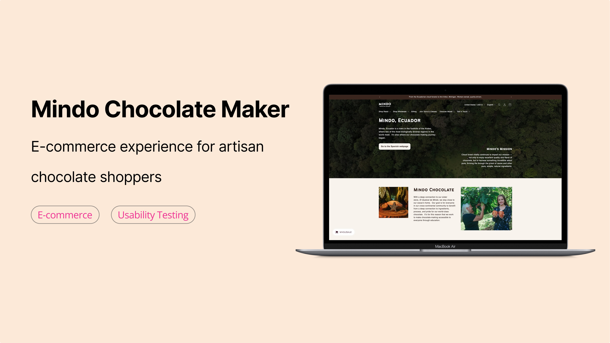
Mindo Chocolate Makers
Mindo Chocolate Makers is an Ann Arbor–based artisan chocolate brand focused on bean-to-bar craftsmanship and transparent sourcing from Ecuador. Its e-commerce platform serves both retail and wholesale customers while communicating the brand’s story. However, usability issues in navigation, structure, and product discovery limit the effectiveness of the overall shopping experience.
Challenge: Information architecture was unclear and product discovery was difficult, impacting sales and user experience.
Visit the live website ↗- Role
- UX Designer
UX Researcher
- Team
- Usability team (*5)
UX Design Team (*2)
- Tools
- Figma
- Timelines
- 4 months
Context
A Strong Brand, but a Fragmented Digital Experience
Mindo had a distinctive bean-to-bar story and an established product offering, but its website did not fully reflect either strength. Retail usability issues created friction in product discovery, while inconsistent visual hierarchy and storytelling made the brand experience feel fragmented.
Our challenge was to strengthen Mindo’s digital presence from two directions: improving the retail shopping experience and creating a more cohesive visual narrative across the homepage and brand pages.
Current Experience
Mapping the Existing Website Experience
We conducted interaction mapping for 3 user flows: Shop Retail, Shop Wholesale, and Discover Mindo.
We mapped three key user flows—Shop Retail, Shop Wholesale, and Discover Mindo—to understand how the existing website organized shopping and brand content.
The audit revealed two recurring issues: fragmented pathways across the shopping experience and inconsistent presentation of Mindo’s brand story. These observations helped us identify where deeper evaluation was needed.
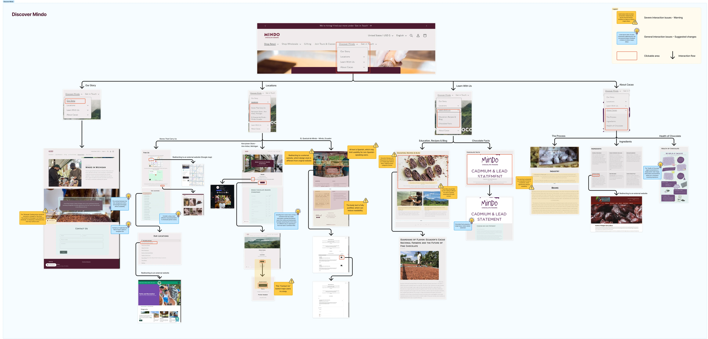
Target User
Who did we design for?
We focused on young adults and college students in Ann Arbor who discover local businesses, explore new food products, and shop online. We considered different shopping motivations, including personal purchases, gift buying, and brand exploration.
User Research
Understanding consumer behavior and brand discovery
We conducted 5 semi-structured interviews to understand how young consumers discover food brands, evaluate products online, and engage with brand storytelling.
Key Findings:
Clear product information supports purchase decisions.
Participants prioritized easy navigation and scannable information when evaluating products.
Brand stories matter when they connect to personal values.
Participants responded more strongly to stories around local production, craftsmanship, and authenticity.
Users rarely seek out brand stories on their own. Participants preferred discovering brand content naturally while browsing products rather than navigating to a standalone About page.
Users value brand stories, but rarely go looking for them.
Therefore, the problem isn't simply “How do we redesign the About page?”
How might we make Mindo's story visible and engaging within the natural browsing experience?
Comparative Evaluation
Learning how consumer brands balance storytelling and commerce
We reviewed five consumer brand websites to understand how they use visual hierarchy, product presentation, and storytelling to create a cohesive shopping experience.
#1
Finding 1: Integrate Storytelling into Browsing
Bring the brand story to users instead of expecting users to seek it out.
Strong brands weave their story into high-traffic pages through imagery, craftsmanship, sourcing, and product narratives.
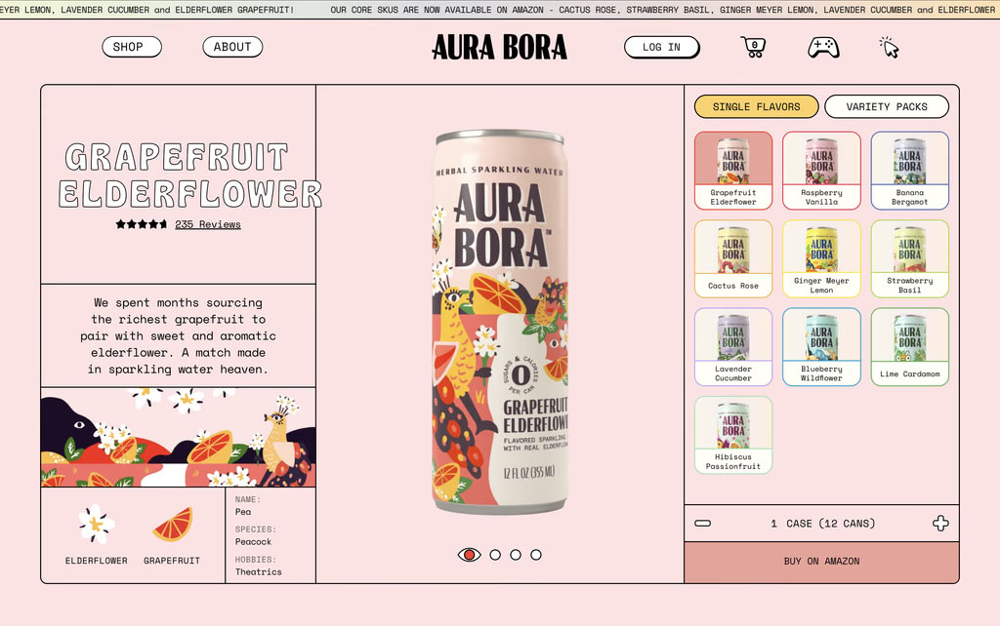
Ingredient storytelling: Highlights key ingredients visually, making the flavor story part of browsing.
Brand personality: Playful illustrations and character details reinforce the brand identity throughout the shopping experience.
#2
Finding 2: Strengthen the Brand–Community Connection
Make Mindo’s local presence visible online.
Local brands build stronger connections by highlighting community events, local partnerships, markets, and real-world experiences, turning the website into an extension of their relationship with the community.
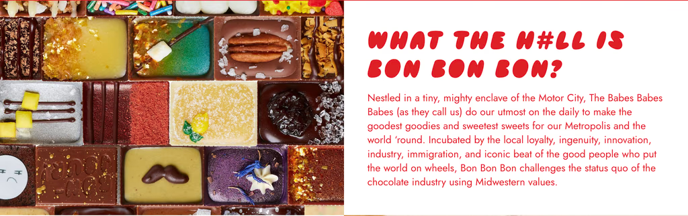
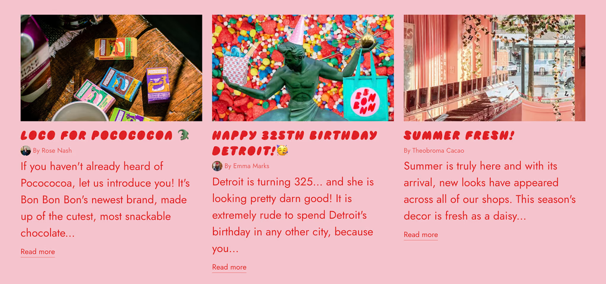
Community moments: Feature local events and seasonal experiences alongside products.
Ongoing connection: Use community-focused content to extend the brand’s local presence online.
#3
Finding 3: Use Visual Consistency to Build Brand Identity
Create a cohesive visual language across storytelling and commerce.
Consistent photography, imagery, and visual hierarchy help connect product pages with the broader brand experience and make the website feel more intentional and recognizable.
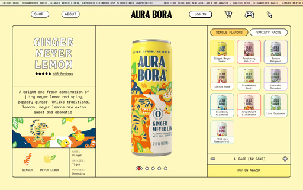
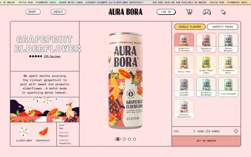
Flavor-driven visuals: Colors, illustrations, and ingredients change with each flavor while staying within the same brand system.
Cohesive identity: Packaging colors and graphics connect individual products to the broader brand.
Heuristic Evaluation
Identifying usability issues in the existing experience
We evaluated the existing website using Nielsen’s usability heuristics to identify friction across product discovery, navigation, and visual hierarchy.
Key Findings:
Inefficient Product Discovery
Unclear product organization and limited filtering made it difficult for users to browse products efficiently.
Limited Navigation Cues
Missing breadcrumbs and page indicators made it difficult for users to understand where they were within the website.
Poor Product Differentiation
Similar product images and lengthy names made products difficult to distinguish at a glance.
Weak Content Hierarchy
Text-heavy sections and limited visual hierarchy made key products and brand achievements difficult to discover at a glance.
Final Design
Visit the live website ↗01 - Home Page
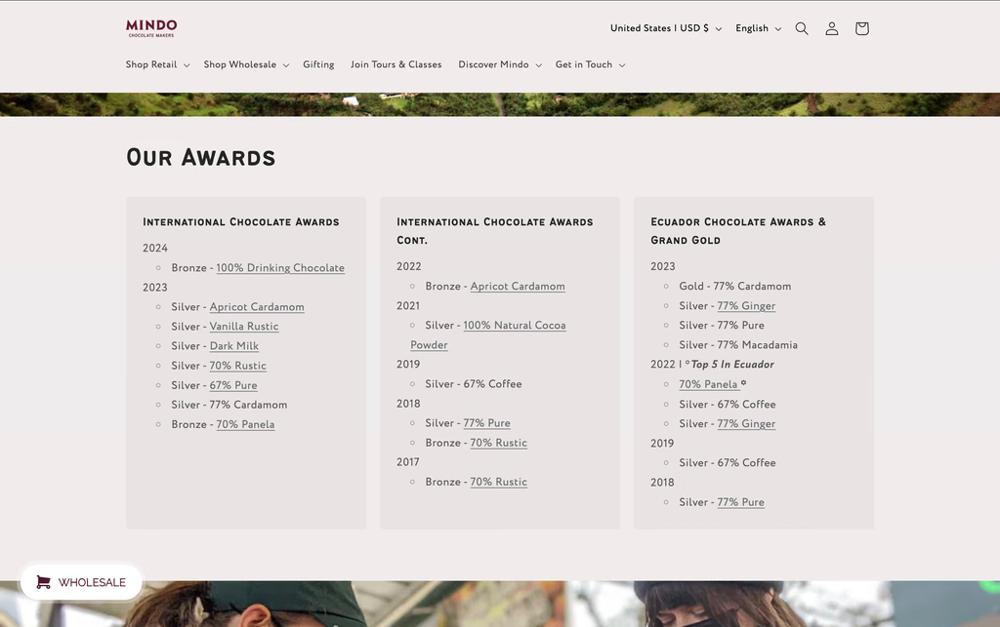
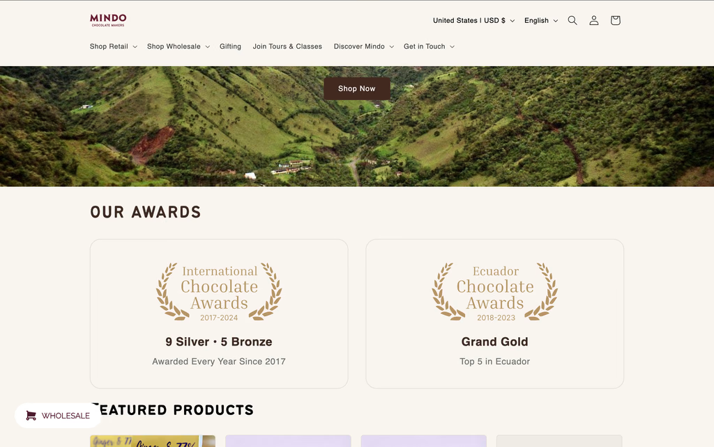
Making brand credibility easier to scan
The original awards section presented years of achievements as dense text lists, making key information difficult to identify. I reorganized the content around two major award programs and surfaced the most meaningful achievements, creating a clearer hierarchy and making Mindo’s credibility recognizable at a glance.
02 - Product Page
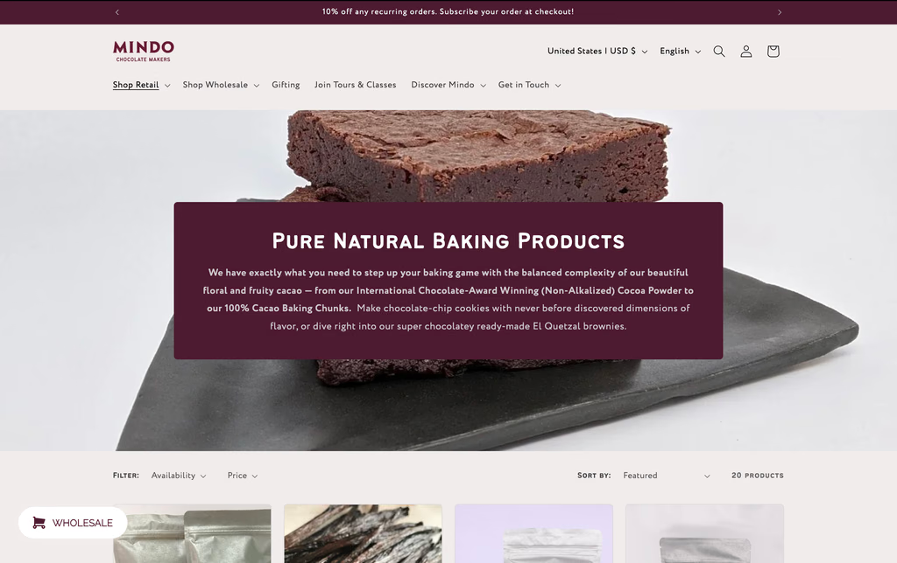
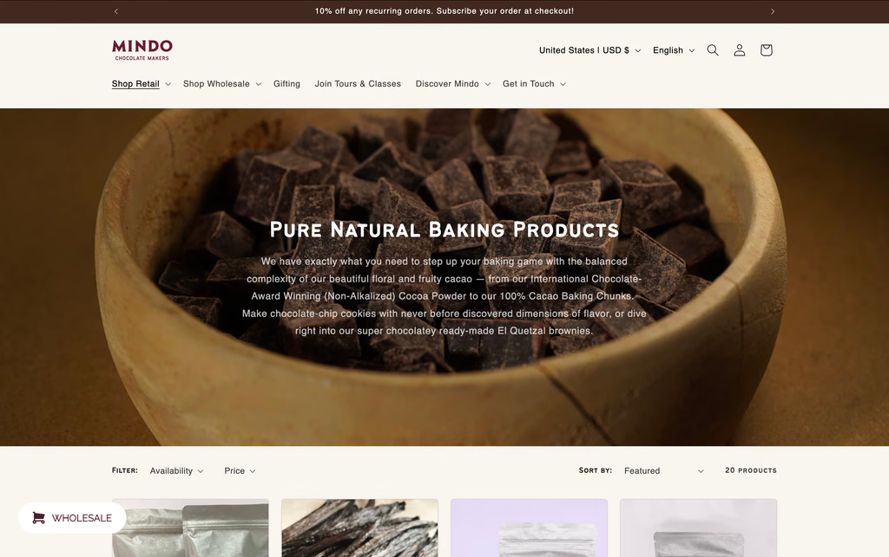
Letting product imagery take center stage
I removed the solid text background to reveal more of the product imagery, then adjusted the image brightness to maintain clear text contrast and readability.
03 - Brand Storytelling


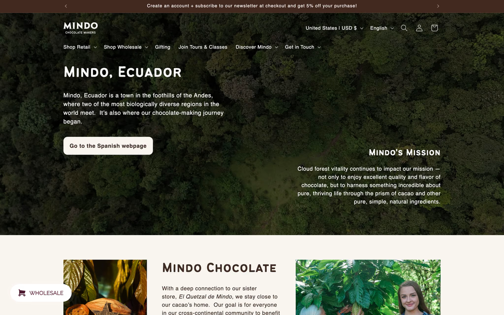
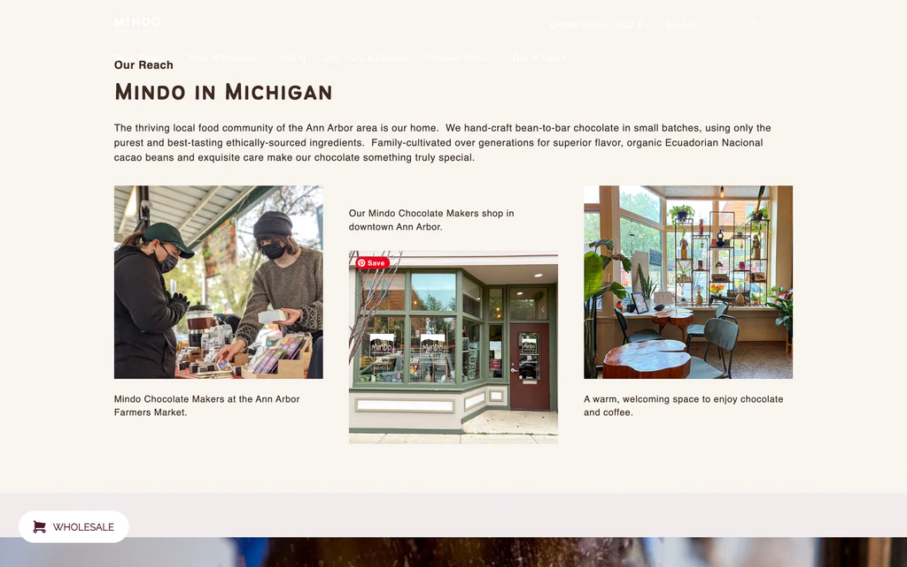
Bringing Mindo's origin story to the forefront
I restructured the page around Mindo’s journey from Ecuador to Michigan, connecting its origin, mission, chocolate-making process, and local presence into a cohesive narrative. Immersive imagery and clearer content hierarchy strengthen the brand’s connection to both Ecuador and the Ann Arbor community.